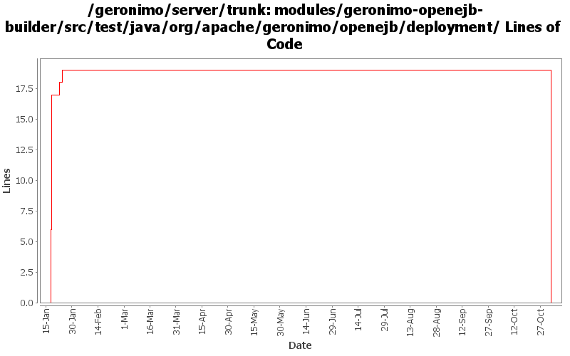

[root]/modules/geronimo-openejb-builder/src/test/java/org/apache/geronimo/openejb/deployment

| Author | Changes | Lines of Code | Lines per Change |
|---|---|---|---|
| Totals | 13 (100.0%) | 38 (100.0%) | 2.9 |
| dain | 6 (46.2%) | 25 (65.8%) | 4.1 |
| dblevins | 4 (30.8%) | 13 (34.2%) | 3.2 |
| prasad | 3 (23.1%) | 0 (0.0%) | 0.0 |
GERONIMO-3565. Modules distributed amongst framework/modules and plugins
0 lines of code changed in 3 files:
Updates for repackaging in openejb
2 lines of code changed in 1 file:
specify the container types for each container
7 lines of code changed in 1 file:
GERONIMO-2772: Support for EJB 3 descriptors and previous
GERONIMO-2770: Ejb Deployment with no ejb-jar.xml
As well as a fix for an issue that was preventing the @Resource and @EJB annotations from working.
More null checks for when the OpenejbJar is null
2 lines of code changed in 1 file:
Ejb deployment now work, but executing the beans has not been tested
2 lines of code changed in 1 file:
Fixed to build offline. Added the jndi mapped name logic to the test case. Added MDB container to test case.
2 lines of code changed in 1 file:
Add container creation code and ref mapped names
17 lines of code changed in 1 file:
Got deployment a bit farther
2 lines of code changed in 1 file:
Updated for latest openejb changes
4 lines of code changed in 1 file:
Initial openejb3 integration
0 lines of code changed in 2 files: